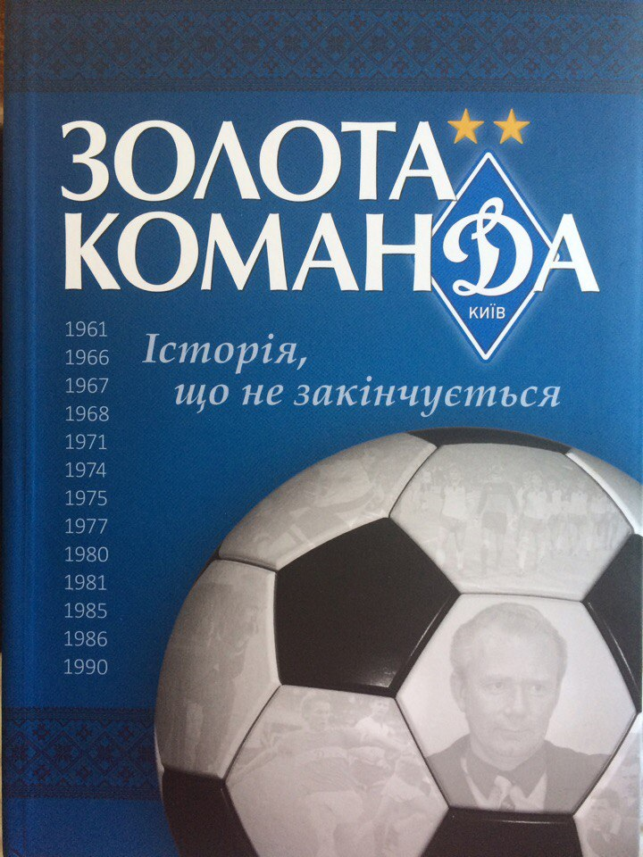

Золота команда
У книзі детально описані видатні епохи і «золоті» сторінки клубної історії, ексклюзивні матеріали, розбавлені унікальними історичними кадрами. Все це лягло більше ніж на чотириста сторінок, і стане відмінним подарунком для вболівальників зі стажем, хто бачив на власні очі, як створювалася славетна динамівська історія, і також сучасному поколінню шанувальників футболу.
Детальніше